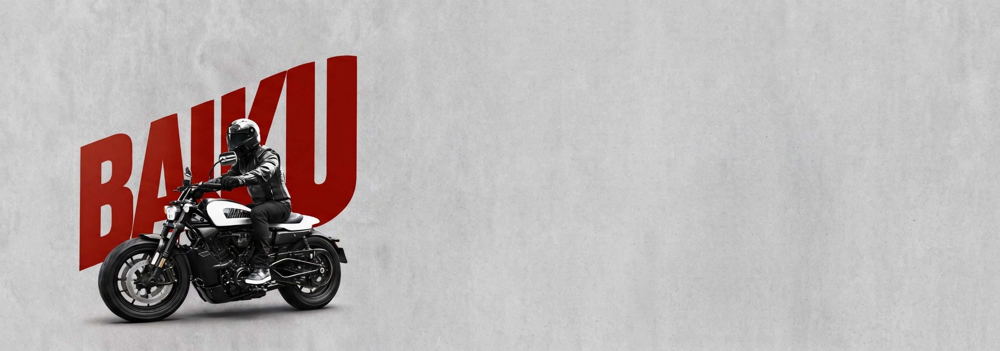

TIRES · ENGINE OIL · バイク
دقت ژاپنی
زیر هر چرخ
لاستیک و روغن موتور با مشخصات فنی شفاف: سایز، گرید و استانداردها را ببینید و آگاهانه انتخاب کنید.
TIRE SIZE FINDER
محصول مناسب موتورت را پیدا کن
پهنا، فاق و رینگ را از روی عدد نوشتهشده روی لاستیک (مثلاً 90/90-17) انتخاب کنید.
دستهبندی محصولات


محصولات پرفروش
محصولات، قیمتها و مشخصات این بخش نمونه و نمایشی هستند.
دربارهی BAIKU
«بایکو» در زبان ژاپنی یعنی موتورسیکلت. این نام را برای فروشگاهی انتخاب کردهایم که ارزشهایش همان ارزشهای فرهنگ موتورسواری ژاپن است: دقت مهندسی، عملکرد و اعتماد.
تمرکز BAIKU روی لاستیک و روغن موتور است؛ دو قطعهای که انتخاب نادرستشان مستقیم روی ایمنی و عمر موتور اثر میگذارد. به همین دلیل هر محصول با مشخصات فنی کامل و خوانا ارائه میشود.
-
اصالت کالا
تأمین محصول از منابع معتبر و قابل پیگیری.
-
اطلاعات فنی دقیق
سایز، گرید و استانداردها بر اساس مشخصات سازنده.
-
ارسال سریع
بستهبندی ایمن و ارسال بهموقع سفارشها.
-
راهنمایی تخصصی
اگر مطمئن نیستید چه محصولی لازم دارید، کنارتان هستیم.